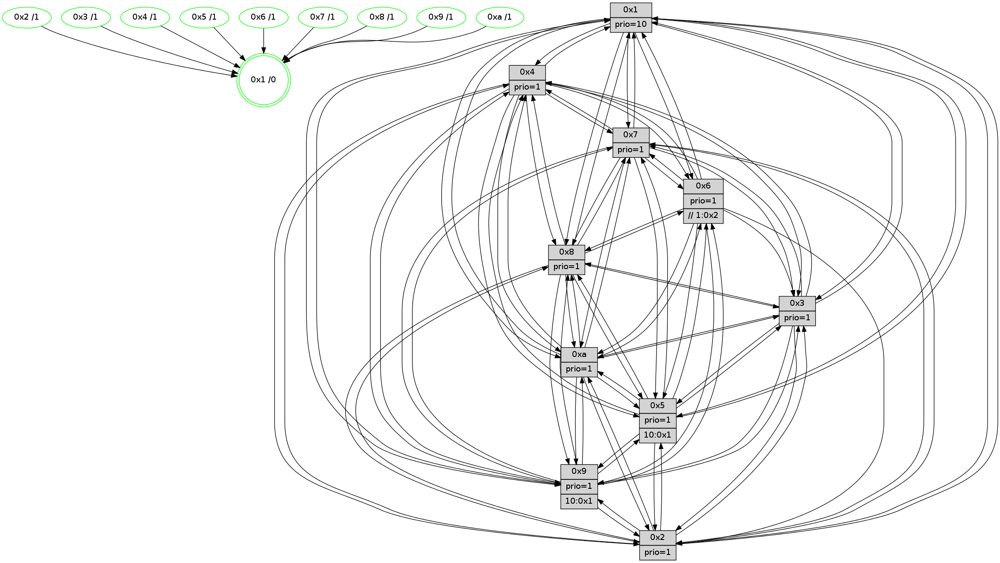

>> << IDX [start] -100 -25 -5 +0 +5 +25 +100 [1510.48753715]
 Previous packets
1505.000600 beacon04(faad) #0 coord=01,02,03,04,05,06,07,0a,09,08 cycle=688.0ms assoc 64 82 fd
1505.010600 beacon05(faad) #0 coord=01,02,03,04,05,06,07,0a,09,08 cycle=688.0ms assoc 64 f8 b0
1505.020601 beacon06(faad) #0 coord=01,02,03,04,05,06,07,0a,09,08 cycle=688.0ms assoc 64 76 67
1505.030600 beacon07(faad) #0 coord=01,02,03,04,05,06,07,0a,09,08 cycle=688.0ms assoc 64 0c 2a
1505.040604 beacon0a(faad) #0 coord=01,02,03,04,05,06,07,0a,09,08 cycle=688.0ms assoc 64 7d 21
1505.050605 beacon09(faad) #0 coord=01,02,03,04,05,06,07,0a,09,08 cycle=688.0ms assoc 64 f3 f6
1505.060606 beacon08(faad) #0 coord=01,02,03,04,05,06,07,0a,09,08 cycle=688.0ms assoc 64 89 bb
1505.071805 [Hello(10): seq=892 sym=6,2,3,8,7,5,9,4,1 sysInfo=hasWarning stat=6:15,13,8,5/2:13,4,10,2/3:3,10,2,15/8:12,11,12,5/7:7,4,9,10/5:2,5,4,3/9:12,6,10,2/4:8,7,7,3/1:0,1,7,1]
1505.074524 [Hello(9): seq=903 sym=2,5,3,4,7,6,8,10,1 sysInfo=hasWarning stat=2:11,11,11,13/5:14,0,3,0/3:6,15,7,7/4:4,7,3,3/7:15,15,3,5/6:10,12,9,1/8:2,0,1,8/10:13,10,4,0/1:14,11,7,1]
1505.078196 [Hello(4): seq=959 sym=5,8,6,2,3,9,7,10,1 sysInfo=hasWarning stat=5:6,15,4,4/8:9,1,1,0/6:15,10,0,2/2:14,11,7,3/3:12,5,14,1/9:9,15,9,3/7:10,7,4,0/10:15,5,0,14/1:6,8,9,1]
1505.081544 [Hello(7): seq=959 sym=2,3,5,6,8,4,9,10,1 sysInfo=hasWarning stat=2:4,6,4,6/3:10,15,7,6/5:10,0,6,5/6:14,12,5,13/8:4,8,0,0/4:1,4,1,0/9:11,15,0,3/10:3,13,13,7/1:4,15,4,0]
1505.084506 [Color(4) seq=498 @0:0 prio=1]
1505.086278 [Color(7) seq=487 @0:0 prio=1]
1505.087757 [Hello(8): seq=903 sym=5,2,3,7,9,6,4,10,1 sysInfo=hasWarning stat=5:8,3,2,3/2:15,2,13,14/3:8,4,1,6/7:0,1,1,1/9:5,6,2,6/6:1,3,14,1/4:8,14,10,2/10:14,5,9,5/1:12,13,9,0]
1505.090892 [Color(8) seq=558 @0:0 prio=1]
1505.095712 [Color(1) seq=639 @0:0 prio=10]
----------------------------------------------------------------------
1505.758748 beacon01(faad) #0 coord=01,02,03,04,05,06,07,0a,09,08 cycle=688.0ms assoc
-- color-indic=1 64 c8 5e
1505.768731 beacon02(faad) #0 coord=01,02,03,04,05,06,07,0a,09,08 cycle=688.0ms assoc 64 5b 6f
1505.778730 beacon03(faad) #0 coord=01,02,03,04,05,06,07,0a,09,08 cycle=688.0ms assoc 64 21 22
1505.788730 beacon04(faad) #0 coord=01,02,03,04,05,06,07,0a,09,08 cycle=688.0ms assoc 64 56 c8
1505.798731 beacon05(faad) #0 coord=01,02,03,04,05,06,07,0a,09,08 cycle=688.0ms assoc 64 2c 85
1505.808731 beacon06(faad) #0 coord=01,02,03,04,05,06,07,0a,09,08 cycle=688.0ms assoc 64 a2 52
1505.818734 beacon07(faad) #0 coord=01,02,03,04,05,06,07,0a,09,08 cycle=688.0ms assoc 64 d8 1f
1505.828737 beacon0a(faad) #0 coord=01,02,03,04,05,06,07,0a,09,08 cycle=688.0ms assoc 64 a9 14
1505.838735 beacon09(faad) #0 coord=01,02,03,04,05,06,07,0a,09,08 cycle=688.0ms assoc 64 27 c3
1505.848737 beacon08(faad) #0 coord=01,02,03,04,05,06,07,0a,09,08 cycle=688.0ms assoc 64 5d 8e
1505.859992 [Hello(1): seq=869 sym=4,2,9,5,10,3,8,6,7 sysInfo=coloring-mode-on,ColoringModeRequestCalled stat=4:11,4,7,4/2:10,5,14,7/9:1,2,15,3/5:4,12,6,11/10:11,6,8,8/3:4,5,5,13/8:8,2,3,6/6:14,14,2,3/7:13,4,10,3]
1505.863751 [Color(9) seq=503 @0:0 prio=1]
1505.865525 [Hello(6): seq=960 sym=3,2,5,4,7,9,8,10,1 sysInfo=hasWarning stat=3:4,6,8,0/2:9,0,3,1/5:10,11,13,6/4:9,14,6,9/7:6,5,3,1/9:13,4,6,12/8:10,11,14,9/10:15,2,0,13/1:0,14,8,1]
1505.868341 [Color(6) seq=592 @0:0 prio=1 >>1.@2,1.@3,1.@4]
1505.870416 [Color(10) seq=549 @0:0 prio=1]
1505.873438 [Hello(5): seq=960 sym=7,6,4,3,1,9,8,10,2 sysInfo=hasWarning stat=7:4,5,11,1/6:8,15,2,0/4:15,12,2,0/3:3,0,4,3/1:13,15,1,0/9:13,1,7,12/8:9,4,1,7/10:7,11,11,9/2:5,9,2,9]
1505.876664 [Hello(2): seq=956 sym=4,5,7,6,3,9,8,10,1 sysInfo=hasWarning stat=4:9,2,6,14/5:6,0,9,4/7:10,4,9,3/6:4,12,3,0/3:7,9,8,2/9:8,3,15,11/8:5,1,2,15/10:8,4,15,11/1:7,13,2,0]
1505.879693 [Hello(3): seq=960 sym=1,7,2,4,8,9,10,5 sysInfo=hasWarning stat=1:13,10,10,0/7:11,1,10,0/2:0,1,0,0/4:13,6,13,14/8:1,2,3,8/9:7,0,2,2/10:7,0,8,5/5:7,1,5,3]
1505.883009 [Color(3) seq=589 @0:0 prio=1]
1505.887689 [Color(5) seq=496 @0:0 prio=1 >10.@1,1.@2,1.@3,1.@4]
1505.889689 [Color(2) seq=536 @0:0 prio=1]
----------------------------------------------------------------------
1506.546880 beacon01(faad) #0 coord=01,02,03,04,05,06,07,0a,09,08 cycle=688.0ms assoc
-- color-indic=1 64 74 5b
1506.556863 beacon02(faad) #0 coord=01,02,03,04,05,06,07,0a,09,08 cycle=688.0ms assoc 64 e7 6a
1506.566863 beacon03(faad) #0 coord=01,02,03,04,05,06,07,0a,09,08 cycle=688.0ms assoc 64 9d 27
1506.576862 beacon04(faad) #0 coord=01,02,03,04,05,06,07,0a,09,08 cycle=688.0ms assoc 64 ea cd
1506.586863 beacon05(faad) #0 coord=01,02,03,04,05,06,07,0a,09,08 cycle=688.0ms assoc 64 90 80
1506.596864 beacon06(faad) #0 coord=01,02,03,04,05,06,07,0a,09,08 cycle=688.0ms assoc 64 1e 57
1506.606863 beacon07(faad) #0 coord=01,02,03,04,05,06,07,0a,09,08 cycle=688.0ms assoc 64 64 1a
1506.616868 beacon0a(faad) #0 coord=01,02,03,04,05,06,07,0a,09,08 cycle=688.0ms assoc 64 15 11
1506.636868 beacon08(faad) #0 coord=01,02,03,04,05,06,07,0a,09,08 cycle=688.0ms assoc 64 e1 8b
1506.649057 [Hello(10): seq=893 sym=6,2,3,8,7,5,9,4,1 sysInfo=hasWarning stat=6:15,13,8,5/2:14,5,10,2/3:4,11,2,15/8:13,12,12,5/7:8,5,9,10/5:3,6,4,3/9:13,6,10,2/4:9,8,7,3/1:1,2,7,1]
1506.652060 [Hello(9): seq=904 sym=2,5,3,4,7,6,8,10,1 sysInfo=hasWarning stat=2:12,12,11,13/5:15,1,3,0/3:7,0,7,7/4:5,8,3,3/7:0,0,3,5/6:11,13,9,1/8:3,1,1,8/10:13,11,4,0/1:15,12,7,1]
1506.655267 [STC(1) #0.267 tree-change,inconsistent-stability,stable,to-color d=0]
1506.657014 [Hello(8): seq=904 sym=5,2,3,7,9,6,4,10,1 sysInfo=hasWarning stat=5:9,4,2,3/2:0,3,13,14/3:9,5,1,6/7:0,1,1,1/9:6,7,2,6/6:2,4,14,1/4:8,14,10,2/10:15,6,9,5/1:13,14,9,0]
1506.659846 [Color(8) seq=559 @0:0 prio=1]
1506.662482 [Color(1) seq=640 @0:0 prio=10]
1506.665919 [Hello(4): seq=960 sym=5,8,6,2,3,9,10,1 sysInfo=hasWarning stat=5:7,0,4,4/8:10,2,1,0/6:0,11,0,2/2:15,12,7,3/3:13,6,14,1/9:10,0,9,3/10:0,6,0,14/1:7,9,9,1]
1506.669564 [Color(4) seq=499 @0:0 prio=1]
1506.671806 [Hello(7): seq=960 sym=2,3,5,6,8,4,9,10,1 sysInfo=hasWarning stat=2:5,7,4,6/3:11,0,7,6/5:11,1,6,5/6:15,13,5,13/8:5,9,0,0/4:1,4,1,0/9:12,0,0,3/10:4,14,13,7/1:5,0,4,0]
1506.675599 [Color(7) seq=488 @0:0 prio=1]
----------------------------------------------------------------------
1507.335013 beacon01(faad) #0 coord=01,02,03,04,05,06,07,0a,09,08 cycle=688.0ms assoc
-- color-indic=1 64 b0 55
1507.344996 beacon02(faad) #0 coord=01,02,03,04,05,06,07,0a,09,08 cycle=688.0ms assoc 64 23 64
1507.354996 beacon03(faad) #0 coord=01,02,03,04,05,06,07,0a,09,08 cycle=688.0ms assoc 64 59 29
1507.364996 beacon04(faad) #0 coord=01,02,03,04,05,06,07,0a,09,08 cycle=688.0ms assoc 64 2e c3
1507.374995 beacon05(faad) #0 coord=01,02,03,04,05,06,07,0a,09,08 cycle=688.0ms assoc 64 54 8e
1507.384997 beacon06(faad) #0 coord=01,02,03,04,05,06,07,0a,09,08 cycle=688.0ms assoc 64 da 59
1507.394997 beacon07(faad) #0 coord=01,02,03,04,05,06,07,0a,09,08 cycle=688.0ms assoc 64 a0 14
1507.405001 beacon0a(faad) #0 coord=01,02,03,04,05,06,07,0a,09,08 cycle=688.0ms assoc 64 d1 1f
1507.425002 beacon08(faad) #0 coord=01,02,03,04,05,06,07,0a,09,08 cycle=688.0ms assoc 64 25 85
1507.436265 [Hello(1): seq=870 sym=4,2,9,5,10,3,8,6,7 sysInfo=coloring-mode-on,ColoringModeRequestCalled stat=4:12,5,7,4/2:11,6,14,7/9:1,3,15,3/5:5,13,6,11/10:12,7,8,8/3:5,6,5,13/8:8,2,3,6/6:15,15,2,3/7:14,5,10,3]
1507.439772 [Hello(5): seq=961 sym=7,6,4,3,1,9,8,10,2 sysInfo=hasWarning stat=7:5,6,11,1/6:8,15,2,0/4:0,13,2,0/3:3,0,4,3/1:14,0,2,0/9:14,1,7,12/8:10,5,1,7/10:8,11,11,9/2:5,10,2,9]
1507.442819 [Hello(2): seq=957 sym=4,5,7,6,3,9,8,10,1 sysInfo=hasWarning stat=4:10,3,6,14/5:6,0,9,4/7:11,5,9,3/6:4,12,3,0/3:7,9,8,2/9:9,4,15,11/8:6,2,2,15/10:9,4,15,11/1:8,14,3,0]
1507.445506 [Hello(6): seq=961 sym=3,2,5,4,7,9,8,10,1 sysInfo=hasWarning stat=3:5,7,8,0/2:10,1,3,1/5:11,12,13,6/4:10,15,6,9/7:7,6,3,1/9:14,5,6,12/8:11,12,14,9/10:0,3,0,13/1:1,15,9,1]
1507.448646 [STC(2)->1 #0.267 tree-change,inconsistent-stability,stable,to-color d=1]
1507.450720 [STC(6)->1 #0.267 tree-change,inconsistent-stability,stable,to-color d=1]
1507.452515 [Color(2) seq=537 @0:0 prio=1]
1507.454920 [Hello(3): seq=961 sym=1,7,2,4,8,9,10,5 sysInfo=hasWarning stat=1:14,11,11,0/7:12,2,10,0/2:0,2,0,0/4:14,7,13,14/8:2,3,3,8/9:8,1,2,2/10:8,0,8,5/5:7,2,5,3]
1507.457299 [Color(6) seq=593 @0:0 prio=1 >>1.@2,1.@3,1.@4]
1507.459009 [STC(5)->1 #0.267 tree-change,inconsistent-stability,stable,to-color d=1]
1507.460657 [Color(5) seq=497 @0:0 prio=1 >10.@1,1.@2,1.@3,1.@4]
1507.462863 [STC(3)->1 #0.267 tree-change,inconsistent-stability,stable,to-color d=1]
1507.465457 [Color(3) seq=590 @0:0 prio=1]
1507.467214 [STC(9)->1 #0.267 tree-change,inconsistent-stability,stable,to-color d=1]
1507.469247 [STC(10)->1 #0.267 tree-change,inconsistent-stability,stable,to-color d=1]
1507.471075 [Color(9) seq=504 @0:0 prio=1 >10.@1,1.@2,1.@3,1.@4]
1507.474034 [Color(10) seq=550 @0:0 prio=1]
----------------------------------------------------------------------
1508.123143 beacon01(faad) #0 coord=01,02,03,04,05,06,07,0a,09,08 cycle=688.0ms assoc
-- color-indic=1 64 0c 50
1508.133125 beacon02(faad) #0 coord=01,02,03,04,05,06,07,0a,09,08 cycle=688.0ms assoc 64 9f 61
1508.143125 beacon03(faad) #0 coord=01,02,03,04,05,06,07,0a,09,08 cycle=688.0ms assoc 64 e5 2c
1508.153127 beacon04(faad) #0 coord=01,02,03,04,05,06,07,0a,09,08 cycle=688.0ms assoc 64 92 c6
1508.163126 beacon05(faad) #0 coord=01,02,03,04,05,06,07,0a,09,08 cycle=688.0ms assoc 64 e8 8b
1508.173126 beacon06(faad) #0 coord=01,02,03,04,05,06,07,0a,09,08 cycle=688.0ms assoc 64 66 5c
1508.183127 beacon07(faad) #0 coord=01,02,03,04,05,06,07,0a,09,08 cycle=688.0ms assoc 64 1c 11
1508.193133 beacon0a(faad) #0 coord=01,02,03,04,05,06,07,0a,09,08 cycle=688.0ms assoc 64 6d 1a
1508.213133 beacon08(faad) #0 coord=01,02,03,04,05,06,07,0a,09,08 cycle=688.0ms assoc 64 99 80
1508.224373 [Hello(10): seq=894 sym=6,2,3,8,7,5,9,4,1 sysInfo=hasWarning stat=6:15,13,8,5/2:14,5,10,2/3:4,11,2,15/8:14,13,12,5/7:9,6,9,10/5:4,6,4,3/9:14,6,10,2/4:10,9,7,3/1:2,3,8,1]
1508.229430 [Color(1) seq=641 @0:0 prio=10]
1508.230769 [Hello(4): seq=961 sym=5,8,6,2,3,9,7,10,1 sysInfo=hasWarning stat=5:8,1,5,4/8:10,2,1,0/6:1,12,1,2/2:0,13,8,3/3:14,7,15,1/9:11,1,10,3/7:0,1,0,0/10:1,7,1,14/1:8,9,9,1]
1508.234534 [Color(4) seq=500 @0:0 prio=1]
1508.236244 [Hello(8): seq=905 sym=5,2,3,7,9,6,4,10,1 sysInfo=hasWarning stat=5:10,5,3,3/2:1,4,14,14/3:10,6,2,6/7:1,2,1,1/9:7,8,3,6/6:3,5,15,1/4:9,15,10,2/10:0,7,10,5/1:14,15,9,0]
1508.239368 [Color(8) seq=560 @0:0 prio=1]
1508.242799 [Hello(9): seq=905 sym=2,5,3,4,7,6,8,10,1 sysInfo=hasWarning stat=2:12,12,11,13/5:15,1,3,0/3:7,0,7,7/4:6,9,3,3/7:1,1,3,5/6:11,13,9,1/8:4,2,1,8/10:13,12,4,0/1:0,13,8,1]
1508.246273 [Hello(7): seq=961 sym=2,3,5,6,8,4,9,10,1 sysInfo=hasWarning stat=2:6,8,5,6/3:12,1,8,6/5:12,2,7,5/6:0,14,6,13/8:5,9,0,0/4:1,4,1,0/9:12,1,1,3/10:5,15,14,7/1:6,0,4,0]
1508.249715 [Color(7) seq=489 @0:0 prio=1]
----------------------------------------------------------------------
1508.911273 beacon01(faad) #0 coord=01,02,03,04,05,06,07,0a,09,08 cycle=688.0ms assoc
-- color-indic=1 64 38 48
1508.921256 beacon02(faad) #0 coord=01,02,03,04,05,06,07,0a,09,08 cycle=688.0ms assoc 64 ab 79
1508.931256 beacon03(faad) #0 coord=01,02,03,04,05,06,07,0a,09,08 cycle=688.0ms assoc 64 d1 34
1508.941256 beacon04(faad) #0 coord=01,02,03,04,05,06,07,0a,09,08 cycle=688.0ms assoc 64 a6 de
1508.951256 beacon05(faad) #0 coord=01,02,03,04,05,06,07,0a,09,08 cycle=688.0ms assoc 64 dc 93
1508.961255 beacon06(faad) #0 coord=01,02,03,04,05,06,07,0a,09,08 cycle=688.0ms assoc 64 52 44
1508.971256 beacon07(faad) #0 coord=01,02,03,04,05,06,07,0a,09,08 cycle=688.0ms assoc 64 28 09
1508.981260 beacon0a(faad) #0 coord=01,02,03,04,05,06,07,0a,09,08 cycle=688.0ms assoc 64 59 02
1509.001261 beacon08(faad) #0 coord=01,02,03,04,05,06,07,0a,09,08 cycle=688.0ms assoc 64 ad 98
1509.012525 [Hello(1): seq=871 sym=4,2,9,5,10,3,8,6,7 sysInfo=coloring-mode-on,ColoringModeRequestCalled stat=4:13,6,7,4/2:12,7,15,7/9:2,4,0,3/5:6,14,7,11/10:13,8,9,8/3:6,7,6,13/8:9,3,3,6/6:0,0,3,3/7:15,6,10,3]
1509.016812 [Hello(5): seq=962 sym=7,6,4,3,1,9,8,10,2 sysInfo=hasWarning stat=7:6,7,11,1/6:8,15,2,0/4:1,14,2,0/3:3,1,5,3/1:15,1,2,0/9:15,2,8,12/8:11,6,1,7/10:9,12,12,9/2:5,10,2,9]
1509.020579 [Color(10) seq=551 @0:0 prio=1]
1509.022974 [Color(5) seq=498 @0:0 prio=1 >10.@1,1.@2,1.@3,1.@4]
1509.024853 [Color(6) seq=594 @0:0 prio=1 >>1.@2,1.@3,1.@4]
1509.028031 [Hello(2): seq=958 sym=4,5,7,3,9,8,10,1 sym= sysInfo=hasWarning stat=]
1509.033409 [Color(9) seq=505 @0:0 prio=1 >10.@1,1.@2,1.@3,1.@4]
1509.035802 [Color(3) seq=591 @0:0 prio=1]
----------------------------------------------------------------------
1509.699403 beacon01(faad) #0 coord=01,02,03,04,05,06,07,0a,09,08 cycle=688.0ms assoc
-- color-indic=1 64 84 4d
1509.709386 beacon02(faad) #0 coord=01,02,03,04,05,06,07,0a,09,08 cycle=688.0ms assoc 64 17 7c
1509.719385 beacon03(faad) #0 coord=01,02,03,04,05,06,07,0a,09,08 cycle=688.0ms assoc 64 6d 31
1509.729386 beacon04(faad) #0 coord=01,02,03,04,05,06,07,0a,09,08 cycle=688.0ms assoc 64 1a db
1509.739386 beacon05(faad) #0 coord=01,02,03,04,05,06,07,0a,09,08 cycle=688.0ms assoc 64 60 96
1509.749387 beacon06(faad) #0 coord=01,02,03,04,05,06,07,0a,09,08 cycle=688.0ms assoc 64 ee 41
1509.759388 beacon07(faad) #0 coord=01,02,03,04,05,06,07,0a,09,08 cycle=688.0ms assoc 64 94 0c
1509.769390 beacon0a(faad) #0 coord=01,02,03,04,05,06,07,0a,09,08 cycle=688.0ms assoc 64 e5 07
1509.789391 beacon08(faad) #0 coord=01,02,03,04,05,06,07,0a,09,08 cycle=688.0ms assoc 64 11 9d
1509.801254 [Hello(9): seq=906 sym=2,5,3,4,7,6,8,10,1 sysInfo=hasWarning stat=2:12,12,11,13/5:15,1,3,0/3:7,1,7,7/4:6,9,3,3/7:2,2,3,5/6:11,13,9,1/8:4,2,1,8/10:13,12,4,0/1:1,13,8,1]
1509.804367 [Color(1) seq=642 @0:0 prio=10]
1509.806516 [Hello(10): seq=895 sym=6,2,3,8,7,5,9,4,1 sysInfo=hasWarning stat=6:15,14,8,5/2:15,5,10,2/3:5,12,2,15/8:15,14,12,5/7:10,7,9,10/5:4,7,4,3/9:15,7,10,2/4:11,10,7,3/1:3,4,8,1]
1509.809471 [Hello(4): seq=962 sym=5,8,6,2,3,9,7,10,1 sysInfo=hasWarning stat=5:9,2,5,4/8:11,3,1,0/6:1,13,1,2/2:1,14,8,3/3:14,8,15,1/9:12,2,10,3/7:1,2,0,0/10:2,7,1,14/1:9,9,9,1]
1509.812992 [Hello(7): seq=962 sym=2,3,5,6,8,4,9,10,1 sysInfo=hasWarning stat=2:7,9,5,6/3:12,2,8,6/5:13,2,7,5/6:1,15,6,13/8:5,9,0,0/4:1,4,1,0/9:12,2,1,3/10:6,15,14,7/1:7,0,4,0]
1509.815955 [Color(4) seq=501 @0:0 prio=1]
1509.818515 [Color(7) seq=490 @0:0 prio=1]
1509.824714 [Color(8) seq=561 @0:0 prio=1]